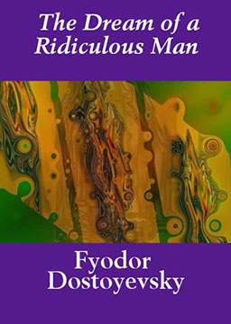

双语小说
收录中英文双语小说300多部，包括世界经典名著、社会小说、悬疑小说等短篇和长篇小说，可按照初中难度、高中难度和大学难度分类阅读，每部小说都有分段中英文对照，点击单词可查看中文翻译。
纯真年代 (The Age of Innocence)
作者：伊迪丝·华顿 (Edith Wharton) [美国]
美国女作家伊迪丝·华顿创作的长篇小说，也是其代表作。该作获得1921年美国普利策文学奖。内容简介：年轻律师纽兰在礼教传统的熏陶下长大，满心欢喜地盼望早日与同阶层的美丽女子梅缔结婚姻，并在欢迎梅的表姐埃伦的宴会上宣布订婚。埃伦嫁给一个一事无成的贵族后裔后，不甘做为装点丈夫客厅的花瓶和无爱婚姻的活祭，毅然决定离婚，回到自己的故乡。由于她的行为不符合当时上流社会的习俗规定，被看作是离经叛道的荡妇，受到亲友的侧目与不齿，而纽兰却被无拘无束、见解独特的埃伦深深吸引，埃伦也因他的真诚相助而对他倾心。相比之下被旧贵族礼教培养出来的梅显得循规蹈矩，索然无味。但是慑于社会传统习俗的巨大威力，纽兰还是与梅提前举行了婚礼。婚后纽兰益发感到自己陷入传统婚姻的陷阱，频繁地约会埃伦，打算孤注一掷与她私奔，但梅怀孕的消息使埃伦毅然断绝了与纽兰的感情纠葛，出走巴黎，纽兰从此忠实地履行着他对社会和家庭的职责。直到多年以后；梅因病离开了人世，长子婚前与纽兰同游巴黎，要父亲去看望埃伦。到了埃伦家门口，纽兰却失去了进去的勇气，在楼下公园的长凳上独坐良久后，一个人回到旅馆。
一个荒唐人的梦（简化版） (The Dream Of a Ridiculous Man)
作者：陀思妥耶夫斯基 (Fyodor Dostoevsky) [俄国]
我是一个荒唐可笑的人。现在他们叫我疯子。在他们看来，如果我依然不像先前那样荒唐的话，那么这一称呼倒是升了一级。不过，我现在已经不生气了，现在我觉得他们全都很可爱，甚至当他们嘲笑我的时候——我反而觉得他们特别可爱。假若望着他们我心里不是那么忧伤的话，我会同他们一道笑的，——不是笑我自己，而是由于喜欢他们。我之所以感到忧伤，是因为他们不懂得真理，而我却懂。唉，一个人懂得真理有多么难啊！谁动了我的奶酪？ (Who Moved My Cheese?)
作者：斯宾塞·约翰逊 (Spencer Johnson) [美国]
美国作家斯宾塞·约翰逊创作的一个寓言故事，该书自1998年9月出版后，两年中销售2000万册，同时迅速跃居《纽约时报》、《华尔街日报》、《商业周刊》最畅销图书排行榜第一名。内容简介：两只小老鼠“嗅嗅”、“匆匆”和两个小矮人“哼哼”、“唧唧”，他们生活在一个迷宫里，奶酪是他们要追寻的东西。有一天，他们同时发现了一个储量丰富的奶酪仓库，便在其周围构筑起自己的幸福生活。很久之后的某天，奶酪突然不见了。这个突如其来的变化使他们的心态暴露无疑：嗅嗅，匆匆随变化而动，立刻穿上始终挂在脖子上的鞋子，开始出去再寻找，并很快就找到了更新鲜更丰富的奶酪：而两个小矮人哼哼和唧唧，面对变化却犹豫不决，烦恼丛生，始终无法接受奶酪已经消失的残酷现实。经过激烈的思想斗争，唧唧终于冲破了思想的束缚，穿上久置不用的跑鞋，重新进入漆黑的迷宫，并最终找到了更多更好的奶酪，而哼哼却仍在郁郁寡欢、怨天尤人。哈利波特7: 死亡圣器 (Harry Potter and the Deathly Hallows)
作者：J.K.罗琳 (Joanne Kathleen Rowling) [英国]
还有四天，哈利就要迎来自己十七岁的生日，成为一名真正的魔法师。然而，他不得不提前离开女贞路 4号，永远离开这个他曾经生活了将近十七年的地方。凤凰社的成员精心谋划了秘密转移哈利的计划，以防哈利遭到伏地魔及其追随者食死徒的袭击。然而，可怕的意外还是发生了。与此同时，卷土重来的伏地魔已经染指霍格沃茨魔法学校，占领了魔法部，控制了半个魔法界，形势急转直下。哈利在罗恩、赫敏的陪伴下，不得不逃亡在外，隐形遁迹。为了完成校长邓布利多的遗命，一直在暗中寻机销毁伏地魔魂器的哈利，意外地获悉如果他们能够拥有传说中的三件死亡圣器，伏地魔将必死无疑。但是，伏地魔也早已开始了寻找长老魔杖的行动，并派出众多食死徒，布下天罗地网追捕哈利。哈利波特6: 混血王子 (Harry Potter and the Half-Blood Prince)
作者：J.K.罗琳 (Joanne Kathleen Rowling) [英国]
哈利和邓布利多成功说服了斯拉格霍恩重返学校，担任魔药课教师，而西斯内普教授则如愿以偿，成为了黑魔法防御课老师。在第一节哈利还没发到书的魔药课上，斯拉格霍恩借给了哈利一本旧的魔药课课本。哈利发现，这本旧课本上面签着“混血王子”这个名字，此外这本书上还有很多笔记。而哈利靠着这些笔记取得了甚至比赫敏还要优秀的魔药课成绩。哈利波特5: 凤凰社 (Harry Potter and the Order of the Phoenix)
作者：J.K.罗琳 (Joanne Kathleen Rowling) [英国]
哈利在女贞路遭受到摄魂怪的袭击。他知道邓布利多与凤凰社的成员正在加紧秘密活动，以对抗日益强大的伏地魔。但是所有的人都不愿向他透露更多的情况……哈利在茫然和愤怒中来到霍格沃茨，然而邓布利多不愿见他，海格不知去向。更糟糕的是，哈利越来越频繁地梦见一道长廊，每当他快要走进长廊尽头的门时，他都会头痛欲裂从梦中惊醒，觉得自己的身体里蠕动着一条大蛇。大蛇的影子在哈利的脑海里越来越清晰，伏地魔走近了哈利。这时，邓布利多告诉他一个天大的秘密……
哈利波特4: 火焰杯 (Harry Potter and the Goblet of Fire)
作者：J.K.罗琳 (Joanne Kathleen Rowling) [英国]
暑假的一天夜里，哈利波特突然被恶梦惊醒，额上的伤痕在刺痛。他做了一个怪异的梦，那梦使他担忧起来……不久在魁地奇世界杯上，恐怖的事发生了，消失了十三年的邪恶巫师的恐怖标记在空中出现……霍格沃茨迎来了巫师界的盛世：“三强争霸赛”。邪恶巫师用魔法使不够年龄的哈利成为三强争霸赛的第四位选手。在好友赫敏，罗恩的帮助下，哈利顺利完成三项任务，当哈利与他的同学塞德里克一起捧起高脚杯迎接胜利时，噩梦才刚刚开始，奖杯是一把门钥匙，把哈利带到了一座墓地。塞德里克被食死徒杀死，波特的血液令藏在蛇身十三年的邪恶伏地魔复活了。
哈利波特3: 阿兹卡班的囚徒 (Harry Potter and the Prisoner of Azkaban)
作者：J.K.罗琳 (Joanne Kathleen Rowling) [英国]
哈利波特十分不情愿的在姨妈家里度暑假，得不到魔法界的一切消息，罗恩和赫敏的信便成了他的唯一安慰。玛姬姑妈前来探望哈利的姨夫，哈利因为受不了她对哈利父母的污蔑，把玛姬姑妈变成了一个胀大的气球。害怕受到惩罚的哈利逃进夜幕，于是开始了新的冒险。哈利波特2: 密室 (Harry Potter and the Chamber of Secrets)
作者：J.K.罗琳 (Joanne Kathleen Rowling) [英国]
在霍格沃茨魔法学校学习一年之后，暑假开始了。哈利·波特在姨父姨妈家熬过痛苦的假期。正当他准备打点行装去学校时，家养小精灵多比前来发出警告：如果哈利返回霍格沃茨，灾难将会临头。多比为哈利重返霍格沃茨设置了很多障碍，但哈利和罗恩还是开着韦斯莱先生会飞的福特老爷车，义无反顾地回到了霍格沃茨。
哈利波特1: 魔法石 (Harry Potter and the Sorcerer's Stone)
作者：J.K.罗琳 (Joanne Kathleen Rowling) [英国]
哈利波特系列丛书已经被翻译成73种语言，共卖出了超过5亿本，俨然已成为一个世界级品牌。内容简介：一岁的哈利·波特失去了父母后，便来到了姨妈家，过着极其痛苦的日子。一直到十一岁生日那天，哈利一生的命运才发生了变化，他收到了一封神秘的信，被邀请去一个童话般的地方一一霍格沃茨魔法学校。哈利发现这里到处充满着魔力，他既找到了朋友，又学会了魔法和骑着飞天扫帚打魁地奇，还得到了一件隐形衣，他在这里生活得很愉快。但一块魔法石出现了，它将关系到世界的现在和未来。哈利在好朋友罗恩和赫敏的帮助下，突破了重重困难，保护了魔法石，终于拯救了世界。